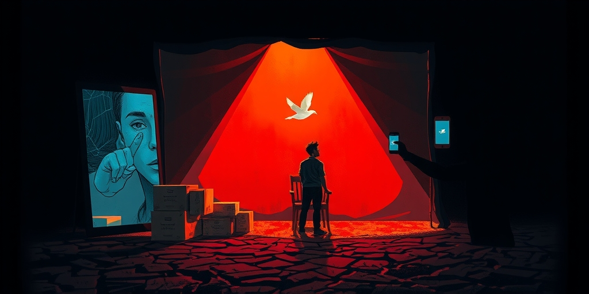
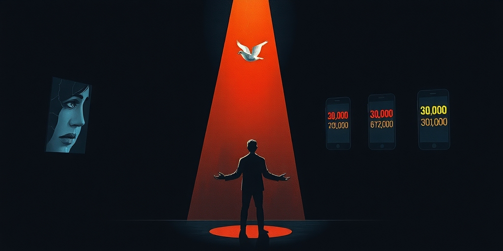
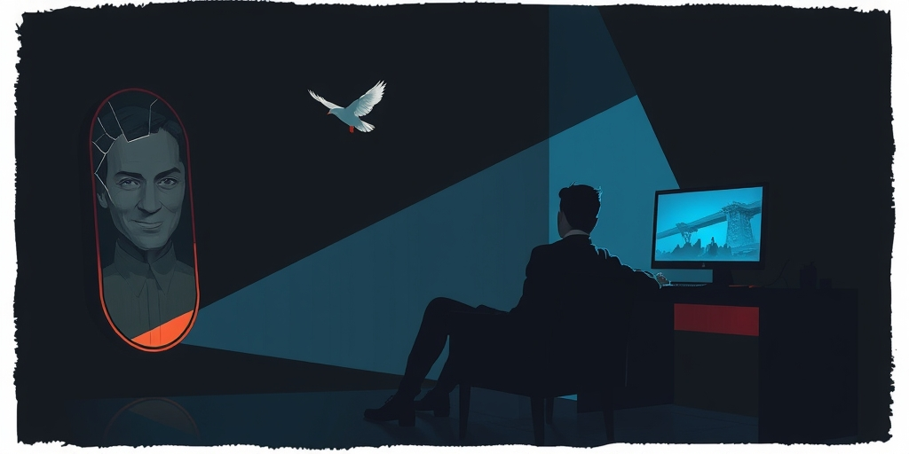

小汪老师的成长洞察 · 属于你的成长专栏
新疆四十度高温的直播棚里，全进华汗流浃背地帮农户推销滞销水果。他零佣金助农，私下向广西灾区捐了三万元。消息传出后，评论区出现的不全是赞扬——「才三万，格局太小」「奥运冠军至少捐三十万」。甚至有人直接逼问正在封闭训练的全红婵本人。一个行善的人，被一群一分钱没捐的人按在地上审判捐得太少。这不是个案，而是一种社会心理机制的精准演出。

新疆的夏天，直播棚里温度超过四十度。全进华坐在简易布景前，汗珠挂在额头上。他对着镜头推销哈密瓜和葡萄，不收一分佣金。这是他的助农直播，一场接一场。私下里，他向广西灾区捐了三万元。没有宣传，没有热搜。只是自己觉得该做。
消息被网友挖出来后，评论区迅速分裂。一部分人竖起大拇指。另一部分人掏出计算器。有人留言：「才三万，格局太小。」有人直接换算：「奥运冠军至少捐三十万。」还有人逼问正在封闭训练的全红婵：「你哥捐三万，你怎么看？」逼问甚至蔓延到全红婵的队友张家齐。
这些声音有一个共同点。它们都来自没有捐款记录的人。一群在空调房里敲键盘的人，正在审判一个在高温下干活的人。他们没有掏一分钱，却有权裁定别人的善意是否达标。一个行善者被一群旁观者按在道德砧板上，反复丈量。逼捐的典型场景，就这样完整呈现。

逼捐行为有一套固定的执行程序。第一步是切换参照系。三万元对于普通工薪族不是小数目。但评论者把参照系从「普通人」切换为「奥运冠军的哥哥」。在这个新的坐标系里，三万瞬间变成了「抠门」。参照系一换，善举就变成了亏欠。你不再是一个捐了三万的个人，而是一个背靠奥运冠军却只捐三万的家属。
第二步是无限上溯责任。全进华做的事，评论却逼问正在封闭训练的全红婵。把一个人的善行，扩展为整个家庭的道德债务。甚至逼问全红婵的队友。行善者的个人选择，被重构为一个关系网里的集体义务。你做了好事，你的家人朋友就都欠了社会。这种上溯没有边界，可以一直延伸到任何跟冠军有关的人。
第三步是封杀所有出口。捐少了是抠门，捐多了是作秀，沉默是冷漠。行善者无论怎么选都会被审判。这三步走完，原本的「一个人自愿捐了三万」，被重构为「一个跟奥运冠军有关系的人只捐了三万」。事实没有变，但故事完全变了。这个重构不需要证据，只需要一套话术。

逼捐为什么能带来快感？因为它是一种零成本的道德套利。指责别人抠门不需要你掏一分钱。但通过指出别人做得不够，你把自己归类到了「善良的那一边」。你什么都没付出，却完成了一次道德站队。这种站队成本为零，收益却很高。你瞬间从一个普通人，变成了道德标准的捍卫者。
更深一层，逼捐的快感来自权力感的短暂满足。普通人平时不被任何人需要，也不被任何人惧怕。但当你审判一个公众人物的家属时，你突然拥有了话语权。你的一句话可以让对方被迫回应，甚至公开解释。这是用零成本获得了一次社会权力的体验。这种权力感极易上瘾，因为它填补了日常生活的无力感。
键盘侠的逻辑与此完全相同。你不需要上战场，只需要指出上战场的人姿势不够标准。你不需要做慈善，只需要指出做慈善的人捐得不够多。通过这种「指出」，你完成了自我道德化。但真正的道德，从来不是靠指出别人的不足来完成的。它需要行动，需要付出。
全进华不是奥运冠军，他是奥运冠军的哥哥。他没有公共职务，没有领公众的钱。他只是跟一个名人有血缘关系。但逼捐机制自动把他纳入了「公众人物家属必须更高尚」的隐含规则。这条规则没有法律依据，也没有道德依据。它存在，是因为它满足了围观者的一个心理需求。
这个心理需求是：你跟我不是一个阶层，所以我对你有更高的期待。这个期待指向的真正目标，往往不是灾区。它指向的是阶层差距本身。逼你捐更多，是一种象征性地从你身上「拿回来」的动作。捐钱给灾区的同时，你也在偿还围观者想象中的阶层债务。全进华捐三万，灾区得到了三万。但围观者觉得，他们失去的阶层尊严，需要你用多捐的钱来弥补。
这种心理机制在公共事件中反复出现。名人捐款，总有人嫌少。企业家捐款，总有人说避税。行善者不仅要付出金钱，还要付出心理代价。他们的善意被放在放大镜下审视，任何一点不够完美的地方，都会成为攻击的靶子。而攻击者自己，永远不需要证明自己的善意。
一群人指责一个人捐得太少，而自己一分没捐。这个行为的内在逻辑是：我已经通过指责你完成了我的道德义务。当道德变成一种「指出别人不够高尚」就可以完成的事，道德本身就被掏空了。它不再要求行动，只要求评价。评价成了道德的替代品。
逼捐者从不觉得自己有问题。他们真诚地认为，自己在维护道德标准。但他们的道德标准只适用于别人。自己永远是被豁免的那一个。这种分裂不是虚伪，而是一种更深的认知失调。他们把评价权当成了道德本身。于是，真正的善行被审判，虚假的道德感被满足。
那个在高温下干活的人，最终需要为一群旁观者的心理舒适买单。他捐了三万，付出的不仅是钱，还有被公开丈量的尊严。而旁观者付出的是什么呢？几句评论，一次转发，和一丝「我比他高尚」的错觉。当道德沦为表演，真正的善意就成了舞台上被围观的囚徒。
写给你的话
下次你想评论一个人捐得太少的时候，可以先做一件事。打开自己的捐款记录，看上面的数字。如果那个数字是零，你的评论可能不是道德，而是一种心理消费。我们总容易在别人的善举里找到不够完美的地方。找到之后，就觉得自己也参与了这场善事。但善事从来不是靠找到别人的不足来完成的。它只跟自己的行动有关。道德如果只是评价别人，那它连一张白纸都不如。
小汪老师的成长洞察 · 属于你的成长专栏